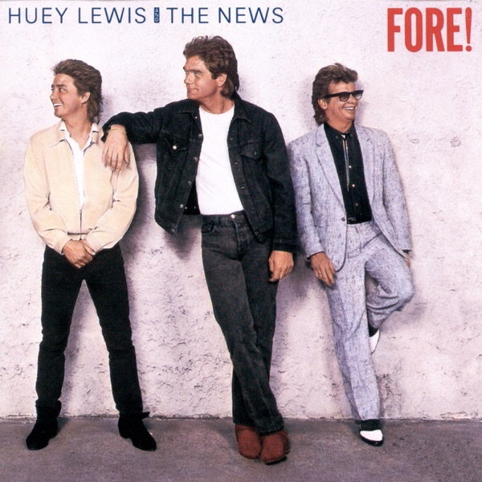

Fore!
Huey Lewis & The News
Upgrade idea: This Bob Ludwig Masterdisk pressing is the best available version. No significant audiophile reissue exists for Fore! — the original Masterdisk pressing is the reference.
Production notes
Tracklist (Discogs)
| A1 | Jacob's Ladder | 3:28 |
| A2 | Stuck With You | 4:28 |
| A3 | Whole Lotta Lovin' | 3:29 |
| A4 | Doing It All For My Baby | 3:41 |
| A5 | Hip To Be Square | 4:03 |
| B1 | I Know What I Like | 4:00 |
| B2 | I Never Walk Alone | 3:41 |
| B3 | Forest For The Trees | 3:21 |
| B4 | Naturally | 2:53 |
| B5 | Simple As That | 4:26 |
Tracklist (Apple Music)
| 1 | Jacob's Ladder | 3:33 |
| 2 | Stuck With You | 4:29 |
| 3 | Whole Lotta Lovin' | 3:30 |
| 4 | Doing It All For My Baby | 3:39 |
| 5 | Hip To Be Square | 4:05 |
| 6 | I Know What I Like | 3:59 |
| 7 | I Never Walk Alone | 3:44 |
| 8 | Forest For the Trees | 3:28 |
| 9 | Naturally | 2:53 |
| 10 | Simple As That | 4:27 |
Personnel & credits
- Laura Lamar — Design [Graphics]
- Malcolm Pollack — Engineer
- Phil Kaffel — Engineer
- Jim "Watts" Vereecke — Engineer [Assistant]
- Rob Beaton — Engineer [Assistant]
- Bob Ludwig — Mastered By
- Michael Christopher (2) — Mixed By [Second Engineer]
- Bennett Hall — Photography By [Hand Tinted], Illustration, Art Direction
- Huey Lewis & The News — Producer
- Jim Gaines — Recorded By
- Robert Missbach — Recorded By, Mixed By
Identifiers
- Barcode: 0 4411-41534-1 (Text)
- Matrix / Runout: OV 41534 AS (Side A Label)
- Matrix / Runout: OV 41534 BS (Side B Label)
- Matrix / Runout: OV-41534-AS RE1-1 G1 RL C19 (Side A Etched, Variant 1)
- Matrix / Runout: OV-41534-BS-5 G2 F2 (Side B Etched, Variant 1)
- Matrix / Runout: OV-41534-AS RE1-1 G1 RL F14 (Side A Etched, Variant 2)
- Matrix / Runout: OV-41534-BS-5 G2 D3 (Side B Etched, Variant 2)
- Matrix / Runout: MASTERDISK (Side A & B Stamped)
- Rights Society: ASCAP
- Rights Society: BMI
Notes
Thank you to Tamalpais High School for supplying us with the wall for our cover.
Label Variation to this release, [r3588647] - no Columbia House under the Cat #.
Fore! is the fourth studio album by Huey Lewis and the News, released in September 1986 on Chrysalis Records, and the commercial peak of the band’s career. Coming off the massive success of Sports (1983), the band delivered another precision-engineered collection of blue-collar rock and blue-eyed soul, spawning five Top 10 singles — a feat matched by very few albums of the era. “Stuck With You,” “Hip to Be Square,” “Jacob’s Ladder,” “I Know What I Like,” and “Doing It All for My Baby” dominated radio throughout 1986 and 1987. The album hit #1 on the Billboard 200 and is certified 3× platinum.
Fore! is quintessential mid-1980s American rock — polished, hook-driven, and produced with Clearmountain-era precision. Huey Lewis’s voice anchors everything with its working-class directness, and the band’s tight ensemble playing gives the album a live-band warmth that set it apart from more synthetic contemporaries. “Hip to Be Square” has since taken on a second life as a cultural reference point, most memorably in American Psycho.
This 1986 US Club Edition (Columbia Record Club, catalog OV 41534) was pressed for CRC subscribers simultaneously with the commercial retail release. The deadwax
OV-41534-AS RE1-1 G1 RL MASTERDISKconfirms mastering by Bob Ludwig (RL) at Masterdisk — one of the great mastering engineers of the era, whose work for Chrysalis in the mid-1980s consistently delivered punchy, dynamic results well-suited to the band’s sound.About this 1986 US pressing (Vinyl, LP, Club Edition): Chrysalis / Columbia Record Club catalog OV 41534, 1986 CRC Club Edition. Mastered by Bob Ludwig (RL) at Masterdisk. Barcode 04411415341.